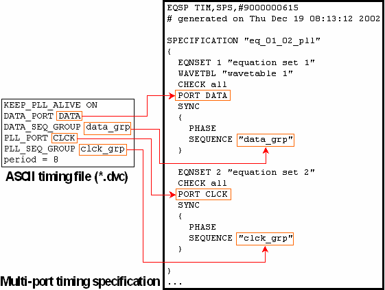

Generating the Multi-Port Specification
The following figure shows a section of the multi-port specification that is generated for the example setup of the preceding sections:

Observe that phase synchronization is activated with the PHASE keyword.